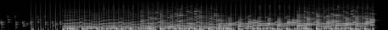
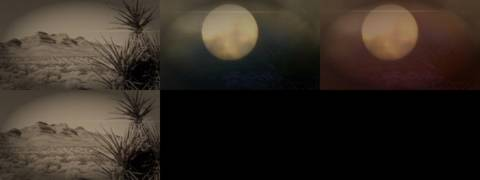
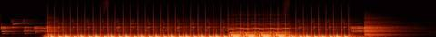

Afterlight / V Mosaic / AFL-20
V · Mosaic · AFL-20 of 22 · 1:24
Sun in Your Eyes
The note that produced it
On this track: The sample from 0:00 to 0:12, with the kick.
“I want each to be a mosaic assemblage of the tracks, never the whole track. Each a separate video experiment to see the samples, get the groove. Aim for 1–2 minutes per track.”
“A different attempt and technology for each Afterlight song / music video experiment”: readable as embers from their spectrograms, as Gaussian splats of places.
What was made
Retinal afterimage: the eye adapts to the archive’s suns and keeps a complementary image when the picture changes; each kick is a blink, red through the eyelid.
Opening 0:00–0:09 and its kick at 0:09.3 looped and built out · the opening at half speed underneath
What came back
The note on this version, which produced AFL-21 Copper Glow:
“Carry the glow”, “light-years to go”, “golden record”, and the opening lines; the only song with words.
Images made while working: contact sheets, check frames, spectrograms, the stills compared before and after a fix. Tap one to see it full size.






No separate critic agent was run on this cut. The critique came from the director, in the notes on either side of it.
On the cut before
The sample from 0:00 to 0:12, with the kick.
On this cut
“Carry the glow”, “light-years to go”, “golden record”, and the opening lines; the only song with words.
Sample map
Every sound placed in the 1:23 study, 24 events by layer, coloured by the track it was cut from. The bars under the map are the whole source tracks; the lit spans are the parts actually used (approximate: stretched and frozen samples are counted by where they start).
The recipe
The function that composed this study, exactly as it ran.
def sun():
"""the opening twelve seconds, its kick at 9.3 s, built out into a slow-burning groove"""
n = 'sun'; m = Mix(84); P = 2.890; K = snap(n, 9.30)
intro = cut(n, 0.0, 9.3)
m.put('intro', intro, 0, 1.0, n, 0.0, 'intro'); m.put('ember', ember(intro, 10, 0.4), 0, 1, n, 0, 'tail')
t = 9.3
m.put('loop', loop(n, K, P, 4), t, 1.0, n, K, 'loop'); place_kicks(m, n, K, P, t, 4); t += 4 * P
stabs = [cut(n, a, a + 1.2) for a in (0.03, 2.35, 4.65, 6.95)]
for bar in range(8):
m.put('loop', loop(n, K, P, 1), t + bar * P, 1.0, n, K, 'loop')
m.put('stab', stabs[bar % 4], t + bar * P + P / 2, 0.6, n, round((0.03, 2.35, 4.65, 6.95)[bar % 4], 2), 'stab')
place_kicks(m, n, K, P, t, 8); t += 8 * P
# the second section of the song, cut into the same grid
D = snap(n, 20.0); PD = period(n, D, 83.0, 4)
m.put('loop', loop(n, D, PD, 4), t, 1.0, n, D, 'loopD'); place_kicks(m, n, D, PD, t, 4)
m.put('intro', stretch(intro, 0.5)[:int(4 * PD * SR)] * 0.6, t, 0.6, n, 0, 'stretched'); t += 4 * PD
m.put('loop', loop(n, K, P, 4), t, 1.0, n, K, 'loop'); place_kicks(m, n, K, P, t, 4); t += 4 * P
m.put('echo', echo(stabs[0], P / 2, 0.6, 8), t, 0.8, n, 0.03, 'echo')
m.put('ember', ember(intro[-3 * SR:], 18, 0.8), t, 1, n, 6, 'tail')
m.duck(['intro', 'stab'], 0.5)
return mThe picture technique
class Retina:
"""the eye looking at the archive's suns: what it has adapted to returns as a complementary afterimage, and every kick is a blink
with the light coming red through the lid"""
def __init__(s, ctx, cats=('sun', 'des', 'sea'), seed=8):
s.c = ctx; s.clips = [clip_frames(i, 320, 180, 12, 10) for i in footage(cats, 8, seed)]
s.A = np.zeros((180, 320, 3), np.float32); s.ch = 0; s.last = -1; s.emb = Embers(12000, 10)
s.cuts = sorted(set(round(e['t'], 2) for e in ctx.events if e['layer'] in ('loop', 'intro', 'a')))
def frame(s, t, dt):
c = s.c; k = sum(1 for x in s.cuts if x <= t)
if k != s.last: s.last = k; s.ch = (s.ch + 1) % len(s.clips)
cl = s.clips[s.ch]; I = cv2.resize(cl[int(t * 12) % len(cl)].astype(np.float32), (320, 180))
I = I * np.array([1.0, 0.85, 0.62]) * (0.6 + 0.6 * c.e('_mix', t))
s.A += (I - s.A) * min(1, dt * 0.9)
after = np.clip(s.A - I * 0.8, 0, 1) # where the eye still holds light that has gone
comp = after.mean(2, keepdims=True) * np.array([0.35, 0.55, 1.0]) * 0.9 + after * 0.2
D = np.clip(I - s.A * 0.35, 0, None) * 1.3 + comp
img = up(D)
b = c.kick(t, 0.12)
if b > 0.05: # the blink: light red through the lid
lid = np.exp(-((YY - H / 2) / (H * 0.5 * (1 - b) + 2)) ** 2)
img = img * (1 - b * 0.85) + (b * 0.5 * (1 - lid * 0.3))[..., None] * np.array([0.9, 0.18, 0.06])
L = img.mean(2); peak = np.unravel_index(np.argmax(gaussian_filter(L[::8, ::8], 2)), L[::8, ::8].shape)
px, py = peak[1] * 8, peak[0] * 8
flare = np.exp(-((YY - py) / 3) ** 2) * np.exp(-((XX - px) / 420) ** 2) * 0.35
img += flare[..., None] * np.array([1.0, 0.7, 0.4])
if b > 0.95: s.emb.emit(np.full(200, px, np.float32) + np.random.default_rng(int(t * 9)).normal(0, 40, 200), np.full(200, py, np.float32), vx=40, vy=-60, T=1.0, life=2.0, spread=70)
s.emb.step(t, dt, wind=(30, -20)); img += s.emb.draw(t, 0.8)
return img + gaussian_filter(img, (8, 8, 0)) * 0.3Files
The scripts that made this version, as plain text.
- compose.py254 linesthe nine mosaics: every cut, loop and freeze
- sampler.py154 linesloop, stretch, reverb, echo, freeze, tape stop
- mix.py85 linesthe 178-second set
- sound_design.py91 linesneedle drop, inhales, risers, sub, tape bus
- engines.py367 linesthe ten picture techniques
- vis_common.py106 linesshared embers, archive frames, the finish
- render.py41 linesrenders frames and encodes
- analyze.py21 linestempo and onsets of each source track
A film concept by Sosuke & Watson · CRASH LAB · PAELEO · CINEOSIS LAB